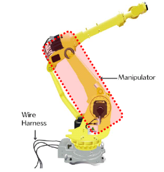
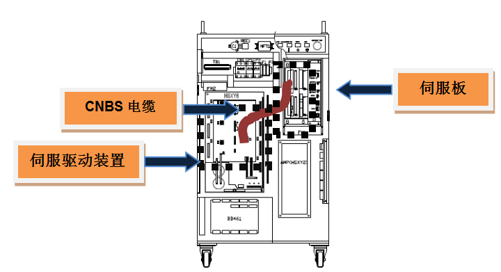
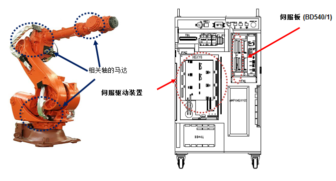

流过在马达或驱动装置的电流大于设定值。为使机器人或驱动装置运行而由伺服控制生成的电流超过内部设置的安全限制值时，伺服板将感知错误并停止机器人。
1. 请确认发生错误的轴是否与其他设备有机械性干涉。
有机器人的机械性干涉或冲突时会发生此错误。超过限制区域时应通过手动操作将机器人移动到安全区域。
2. 请检查马达电源线。
请关闭1次电源后将该轴驱动装置的U、V、W分离出来并检查各相是否出现短路。请用万用表(测试仪)等装置以1: 1方式确认各相的配线状态。

1) 请确认连接机器人和控制器的电线。
拆除连接控制器与机器人或驱动装置的电线，确认各相(U相、V相、W相)是否相互或与接地出现短路，如果有短路的地方，请更换之。

图 5.52 机器人与控制器间的基本安装结构图
2) 请检查机器人内部的配线状态。
需要检查连接于机器人内部马达的电线是否有短路或配错的地方。

图 5.53 机器人内部配线
3) 请检查控制器内部的配线状态。
需要检查控制器内部的放大器和所安装的电线。

图 5.54 控制器内部(电源部)
3. 请检查控制器内部伺服板(DSP板)与驱动装置之间的CNBS电缆。
请检查CNBS电缆是否正确安装。电缆连接不正确或电缆不良时可能会发生该错误。

图 5.55 控制器内部(CNBS电缆)
4. 请更换其它配件。
按伺服板(BD544) → 伺服驱动装置 → 马达的顺序更换并确认错误是否发生。
